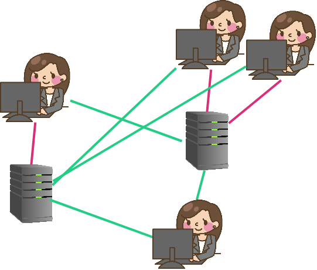
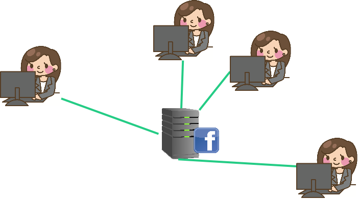

<!DOCTYPE html>
<html lang="en">

<head>
  <meta charset="utf-8" />
  <meta name="viewport" content="width=device-width, initial-scale=1.0, maximum-scale=1.0, user-scalable=no" />

  <title>Coordination and Centralization - Past Present and Future</title>
  <link rel="icon" href="./../../assets/favicon.svg" />
  <link rel="shortcut icon" href="./../../assets/favicon.png" />
  <link rel="stylesheet" href="./../../dist/reset.css" />
  <link rel="stylesheet" href="./../../dist/reveal.css" />
  <link rel="stylesheet" href="./../.././assets/styles/PBA-theme.css" id="theme" />
  <link rel="stylesheet" href="./../../css/highlight/shades-of-purple.css" />

  <link rel="stylesheet" href="./../.././assets/styles/custom-classes.css" />

</head>

<body class="site">
  <header class="site-header">
    <!-- This logo is a link only on the watching server, not the production build -->
    <a href="">
      
    </a>
  </header>
  <main class="reveal">
    <article class="slides">
      <section  data-markdown><script type="text/template">

# Coordination and Centralization

## Past Present and Future

<aside class="notes"><p>Introduce instructors, tell about background, glad to be here.
Let&#39;s all learn together.
Shoot the shit until the initial nervousness starts to wear off, or at least peaks.</p>
</aside></script></section><section ><section data-markdown><script type="text/template">
## Goals

- Trustless provisioning of infrastructure. <!-- .element: class="fragment" -->
- Ways to coordinate with people we don't trust. <!-- .element: class="fragment" -->

<aside class="notes"><p>So. What are we doing here? What are our goals?</p>
<p>First:
Something kind of like a server, that doesn&#39;t rely on a server operator, and has strong guarantees like Cryptography has to offer.</p>
<p>Next: Coming to a shared understanding of a common history, and therefore a common state, of a system.</p>
</aside></script></section><section data-markdown><script type="text/template">
## Comparison with Cryptography

Cryptography provides strong guarantees about _messages_ without a trusted party, regardless of the conduit over which a message was transported.

<aside class="notes"><p>Crypto guarantees:</p>
<ul>
<li>No tampering</li>
<li>No eavesdropping</li>
<li>Authenticity of the author</li>
</ul>
<p>We want these same <em>kinds</em> of guarantees, not just about messages, but about entire systems.</p>
</aside></script></section></section><section  data-markdown><script type="text/template">
## Web 0

Telegraph, Telephone

Users transmit information peer-to-peer.

Crypto not typically used except by military, but upheld guarantees when used.


</script></section><section  data-markdown><script type="text/template">
## Web 1

Introduction of always-on servers.

Still mostly peer-to-peer.

Cryptography more often, but still not ubiquitous.


</script></section><section ><section data-markdown><script type="text/template">
## Web 2

Introduction of **Digital Services** with **Rich State**.

Administered by service providers: "Send _us_ your information."

However, users must place faith in the service provider.

Cryptographic guarantees are about interactions with the service provider, not peers.


</script></section><section data-markdown><script type="text/template">
## Digital Services

People rely on digital services every day.
They are inescapable and valuable.

- Twitter, Instagram, Facebook, etc.
- Journalism and sources
- Banks
- Lawyers, notaries, regulators

<aside class="notes"><ul>
<li>Ask class for more examples</li>
<li>Digital services are not bad in and of themselves. They are very valuable. We use all of these every day. We are even using some to administer this course. But they are also hard to escape.</li>
</ul>
</aside></script></section><section data-markdown><script type="text/template">
## Trust Example

Two users on Twitter:

- Trust that we are seeing information from the same database\*
- Trust that if a tweet is from X, then X wrote that tweet\*
- Trust that others see our messages as from us\*
- Trust that the messages we see are the messages the users wrote\*
- Trust that we're interacting with the application as equals

<aside class="notes"><ul>
<li>Cryptography actually provides a lot of these guarantees, but not when an intermediary has stepped in between users.</li>
<li>This is one example, but class should discuss.</li>
</ul>
</aside></script></section><section data-markdown><script type="text/template">
## God Mode Enabled

In web 2, service providers can perform abuses:

- Censoring user interaction
- Restricting users interaction
- Failing to produce requested data
- Mutating state opaquely
</script></section><section data-markdown><script type="text/template">
## Thought experiment: Digital Currency

Bitcoin's application was digital currency - a trivially simple application.

Could this be built with Web2 technology?

<aside class="notes"><p>Yep it could. This is the kind of simple app you might build in a Freshman year course
on modern web interfaces. It just needs to maintain a set of bank notes and their owners (or alternatively a set of accounts and their balances.) So why didn&#39;t this exist in web 2? Because the provider could print money. Or steal money. Or freeze funds.
Side thought. How different is this from fiat currencies?</p>
</aside></script></section><section data-markdown><script type="text/template">
## Distributed Applications in Web 2

Providers run redundant data centers to prevents accidents.

But it still assumes benevolent participants and some trusted leader.

<aside class="notes"><p>Even in web2 we start to see the idea of redundancy to prevent accidents from natural disasters, sabotage, hardware failure etc.
But we do not yet see disintermediation. In web 2, the masses become beholden to the service providers who were free to extract value and manipulate the users.</p>
<p>In fact redundant systems were widely studied even before web 2. Consider a flight computer that has sensors for things like air speed and altitude. If one sensor fails we want the plane to keep flying.</p>
</aside></script></section></section><section  data-markdown><script type="text/template">
## Web3

- <span>A provision of digital services without the need to trust a service _provider_.</span> <!-- .element: class="fragment" -->
- Providers do not need to be trusted; they are economically incentivized to behave honestly. <!-- .element: class="fragment" -->
- Allow users to interact with a common system without trusting any intermediaries. <!-- .element: class="fragment" -->

<aside class="notes"><p>We want to maintain the value, versatility, and richness of Web2, but remove the trust, and possibility of extractive behavior.</p>
</aside></script></section><section ><section data-markdown><script type="text/template">
# Desired Properties
</script></section><section data-markdown><script type="text/template">
## Permissionless access

Anyone should be able to access and interact with the system.
</script></section><section data-markdown><script type="text/template">
## Privacy

Users should have credible expectations about what information they give up about themselves.
</script></section><section data-markdown><script type="text/template">
## Authenticity

Users should have credible expectations about the messages they see, regardless of the platform the messages are on.
</script></section><section data-markdown><script type="text/template">
## Finality

Users should be able to form credible expectations about when a state transition is final.
</script></section><section data-markdown><script type="text/template">
## Behavior

The system should behave as expected, even if system operators do not.
</script></section><section data-markdown><script type="text/template">
## Unstoppability

No individual actor, company, state, or coalition should be able to degrade any of these properties.
</script></section></section><section ><section data-markdown><script type="text/template">
## A Shared History


<aside class="notes"><p>So now we understand the goals of web3. How do we achieve them? The key is allowing users to agree on a shared history. The simplest blockchains do nothing more than timestamp and attest to a stream of historical records. In Web 2, and indeed often in governmental bureaucracies, users have no visibility into the history of the app. They must trust the provider to accurately represent the current state. By giving the service provider the power to change the story, we give them the power to shape our understanding of reality and consequently our behavior.</p>
</aside></script></section><section data-markdown><script type="text/template">
## A Shared History

> Any large-scale operation - whether a modern state, a medieval church, or an archaic tribe - is rooted in common stories that exist only in people's collective imaginations.

> Telling effective stories is not easy. The difficulty lies ... in convincing everyone else to believe it. Much of history revolves around this question: How does one convince millions of people to believe particular stories about gods, nations, or LLCs?

<!-- .element: class="fragment" -->

_-- Yuval Noah Harari, Sapiens --_
</script></section></section><section  data-markdown><script type="text/template"></script></section>
    </article>
  </main>

  <script src="./../../dist/reveal.js"></script>

  <script src="./../../plugin/markdown/markdown.js"></script>
  <script src="./../../plugin/highlight/highlight.js"></script>
  <script src="./../../plugin/zoom/zoom.js"></script>
  <script src="./../../plugin/notes/notes.js"></script>
  <script src="./../../plugin/math/math.js"></script>

  <script src="./../../assets/plugin/mermaid.js"></script>
  <script src="./../../assets/plugin/mermaid-theme.js"></script>

  <script src="./../../assets/plugin/chart/chart.js"></script>
  <script src="./../../assets/plugin/chart/chart.min.js"></script>

  <script src="./../../assets/plugin/tailwindcss.min.js"></script>

  <script>
    function extend() {
      var target = {};
      for (var i = 0; i < arguments.length; i++) {
        var source = arguments[i];
        for (var key in source) {
          if (source.hasOwnProperty(key)) {
            target[key] = source[key];
          }
        }
      }
      return target;
    }

    // default options to init reveal.js
    var defaultOptions = {
      controls: true,
      progress: true,
      history: true,
      center: true,
      transition: 'default', // none/fade/slide/convex/concave/zoom
      slideNumber: true,
      mermaid: {
        startOnLoad: false,
        logLevel: 3,
        theme: 'base',
        themeVariables: {
          primaryColor: purple,
          primaryTextColor: white,
          primaryBorderColor: pink,
          lineColor: pink,
          secondaryColor: lightPurple,
          tertiaryColor: lightPurple,
        },
      },
      chart: {
        defaults: {
          color: 'lightgray', // color of labels
          scale: {
            beginAtZero: true,
            ticks: { stepSize: 1 },
            grid: { color: "lightgray" }, // color of grid lines
          },
        },
        line: { borderColor: ["#ccc", "#E6007A", "#6D3AEE"], "borderDash": [[5, 10], [0, 0]] },
        bar: { backgroundColor: ["#ccc", "#E6007A", "#6D3AEE"] },
      },
      plugins: [
        RevealMarkdown,
        RevealHighlight,
        RevealZoom,
        RevealNotes,
        RevealMath,
        RevealMermaid,
        RevealChart
      ]
    };

    // options from URL query string
    var queryOptions = Reveal().getQueryHash() || {};

    var options = extend(defaultOptions, {"width":1400,"height":900,"margin":0,"minScale":0.2,"maxScale":2,"transition":"none","controls":true,"progress":true,"center":true,"slideNumber":true,"backgroundTransition":"fade"}, queryOptions);
  </script>


  <script>
    Reveal.initialize(options);
  </script>
</body>

</html>
